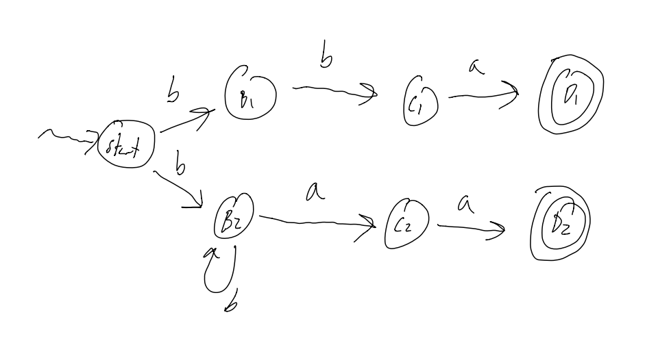

A DFA for a label (i.e: starts with letter, then any numberletter or number)

Images courtesy of Stephen Melinyshyn
These notes are far from complete and are quite porous compared to what’s been covered in class.
Copying code and diagrams off of powerpoints is hard in and of itself, but when the powerpoint slides start flying by, it becomes an impossible task.
Use these as a super rough outline of what we may have possibly covered in class, but do not use these as a primary set of study notes.
That said, the section regarding Formal Languages might be more complete.
Yours,
- Daniel Prilik
Oh boy! Here we go again!
The course website is www.student.cs.uwaterloo.ca/~cs241/
A note about Assignments:
The course uses our favorite program: Marmoset!
Marking breakdown:
So what is the purpose of this course:
By the end of this course, we will know what really happens when you compile and run a program, and there will be little to no mystery about what happens when you run a program.
In this course, all a computer is a CPU and RAM.
A CPU Controls and Manipulates the Data, and the RAM is just a bunch of addressed “boxes” that store Data.
All data is at a basic level is a sequence of 1s and 0s, or Bits
There are many interpretations for what a specific sequence of bits means (i.e: numbers, ascii, etc…), and there is no one “correct” interpretation.
There are certain sequences of bits that do in-fact have one specific meaning, or at least they do when it comes to how the machine interprets them. Depending on the Achitecture of the machine (i.e: Intel/Motorola, 32/64bit, etc…) there may be different bit sequences that mean the same things.
These codes are great for machines, super easy, just 0 = off, 1 = off, but they SUCKS for humans.
Assembly on the other hand, sucks less for Humans.
It is a simple, textual representation of machine language. It is more human readable, and makes development less, shall we say, absolutely terrible.
A big plus of assembly is that is it pretty easy to translate Assembly to Machine Code. Assembly is just an Abstraction.
The Assembler is the program that preforms the translation from Assembly to Machine Code.
What is a Bit exactly?
Well, it is just a value that can have 2 states, either 1, or 0. That’s it.
The nice thing is that a sequence of bits can describle a lot of different value.
We can use Bits to describle certain useful “types”:
Each sequence is just a direct representation of a number in base 2.
What if we want Negative Numbers? Well, then we have to use a more complicated code, called 2s compliemnt.
To get 2s compliemnt, we
So, With 3 bits, we can have the following interpretations for integers…
| Binary | Decimal | 2’s compliment |
|---|---|---|
000 |
0 | 0 |
001 |
1 | 1 |
010 |
2 | 2 |
011 |
3 | 3 |
100 |
4 | -4 |
101 |
5 | -3 |
110 |
6 | -2 |
111 |
7 | -1 |
** Notice that in 2s compliment, the left-most bit tells us if it is negative or not…
To hammer in this point, consider 1010.
What does it mean?
Well, nothing really, not until we know what type is should represent.
It is 10 if it’s an unsigned number, but it’s -6 in 2s compliment
Typically represented with 8 Bits
Eg: 00001010 is \n in ASCII (use the linux command man ascii for a full table)
In general, binary SUCKS to work with. Hexadecimal sucks less.
Essentially, we can represent numbers with 16 symbols, instead of just 1 and 0
We use the digits 0-9, A, B, C, D, E, and F.
A nice property of Hexadecimal is that it is easy to convert into Binary, and vice versa.
You just split the binary number into chunks of 4 bits, and then write the digit associated with each chunk.
Eg: 1010 1111 1001 1001 = xAF99
The most common grouping of bits is in a byte, or a group of 8 bits
There are 256 possible values that can be encoded by 8 bits. What to encode however, is up to interpretation (see above)
Files are just long sequences of bytes, and it is up to a program to determine what the byte sequences actually mean.
The command cat for example, will interpret any file thrown at it as Text, and print out each byte as a ASCII char.
The command xxd on the other hand, will print the file’s bits as hexadecimal values (alongside an ascii interpretation of the bits)
So, for example, if there is a file hasY with string Y\n, then the output of xxd would be something like:
#Addr #Hex #Ascii
00000000: 590a Y.
59 is the hex code for Y in ascii, and 0a is the hex code for the Newline Char in ascii
A Word is a grouping a bits that a specific CPU “likes” (i.e: can easily do math on, execute ops, etc…)
Words can be any number of bits… from 8 bit in the 80s, all the way to 64 bit nowadays.
NOTE: a CPU’s specific word-size will limit the total ammount of memory a CPU can ever see! For example, 32 bit CPUs could only address ~3.5gigs of memory, so until the switch to 64 bit CPUS, no matter how much RAM you shoved in a PC, if the OS was 32bit, it couldn’t see more than 3.5gigs
The machine we are using in cs241 is a Stored Program Computer
What this means is that the CPU is connected to the Memory (via a “mem bus”) not just to use the memory as a place to store data, but also as a place to store actual program code.
To run a program, the CPU calls the memory for an instruction, and the memory returns a string of bits that (should) correspond to a instruction that the CPU can execute.
CPUs are not actually just magic boxes. They have things within them that make them work…
There are several places to Store things
And there are other places that Do things
RAM is really just a giant block of “boxes” that can store bytes, starting from 0 to denote the 1st byte, 4 to denote the 5th byte, etc…
On a MIPS machine, words are 4 bytes, and as such, when addressing the RAM to ask for instructions, we must ask for words, so we address RAM in increments of 4.
MIPS is a set of instructions that our processor understands.
In this course, there are 18 different 32-bit (4 byte) instructions encoded in 2 basic instruction formats.
MIPS assembler is the Assembly Language that translates human-readable instructions into the actual 32-bit / 1 word instructions that the CPU can read.
For example:
add $1, $2, $3 are MIPS instructions that correspond to…0000 0000 0100 0011 0000 1000 0010 0000 when converted to Binary, or 0x00430820 when written in HexThat binary actually means the following…
000000 ; Call the ALU
00010 ; $2
00011 ; $3
00001 ; $1
00000100000 ; Add
A full list of MIPS instructions can be found here: https://www.student.cs.uwaterloo.ca/~cs241/mips/mipsref.pdf
The instruction lw loads a word from memory, and sw stores a word to memory
Eg: lw $7, 0($3) will load the value at MEM[$3] into register $7
Eg: sw $8, 4($3) will load the value from $8 to MEM[$3+4] (that +4 is needed since we store Words in memory, and Words are 4 bytes each)
Every single clock cycle, the following happens:
1) Fetch a word from RAM whose address is in the PC (the PC is initialized to 0 on power-on)
2) Place that word in the IR
3) Increment the PC by 4
4) Decode and Execute the instruction that is in the IR
| Register | Description |
|---|---|
$0 |
Constant value 0 |
$29 and $30 |
Stack (see below…) |
$31 |
The Return Address (RA) |
There is a 1 to 1 correspondance b/w Assembly Language and Machine Language. It translates human-friendlier mnemonic instructions like add $3, $1, $2 to their related bit form. The Assembler is the program that does this automatic translation.
For some example of Assembly Code and the Machine Language equivilents, see the cs241 website.
Labels identify an address.
; some stuff
loop: add ...
; more instructions...
bne $2, $0, loop ;using label
X: Y: ; can have 2 labels on the same line
What happens if we call a subroutine where it uses some registers, that you need! We only have $32 registers after all!
Consider this example below
; Example 6a: Calling a procedure
sw $31, −4($30) ; save $31 on stack
lis $31
.word 4
sub $30, $30, $31
lis $1 ; call sumOneToN(13)
.word sumOneToN
lis $2
.word 13
jalr $1
lis $31 ; restore $31 from stack
.word 4
add $30, $30, $31
lw $31, −4($30)
jr $31 ; return to OS
;------------------------
; Example 6b: A procedure
; sumOneToN: sum the integers from 1 to N
; input: $2 is N
; output: $3 is the sum
sumOneToN:
sw $1, −4($30) ; save $1 on stack
sw $2, −8($30) ; save $2 on stack
lis $1
.word 8
sub $30, $30, $1
add $3, $0, $0 ; clear $3
beginLoop:
add $3, $3, $2 ; add $2 to $3
lis $1 ; decrement $2
.word −1
add $2, $2, $1
bne $2, $0, beginLoop
lis $1
.word 8
add $30, $30, $1
lw $1, −4($30) ; restore $1 from stack
lw $2, −8($30) ; restore $2 from stack
jr $31 ; return from sumOneToN
In general, Stack usage rules are:
sw
sw
...
sub $30, $30, 4.n
[body]
add $30, $30, 4.n
lw
lw
jr $31
Here is an example of recursion
; Save $31 on the stack
sw $31, -4($30)
lis $31
.word 4
sub $30, $30, $31
; Call recSum(13)
lis $4
.word recSum
lis $1
.word 13
jalr $4
; Restore $31 from the stack
lis $31
.word 4
add $30, $30, $31
lw $31, -4($30)
; Return to OS
jr $31
;-----------------------
; recursively sum up the integers from 1 to N
; assume that input (N) is in $1
; output is returned in $3
recSum:
; Save registers on the stack
sw $1, -4($30)
sw $2, -8($30)
sw $4, -12($30)
sw $31, -16($30)
lis $4
.word 16
sub $30, $30, $4
; Initialize sum so far
add $3, $0, $0
; Check to see if we are in the base case (N=0)
beq $1, $0, done
; Otherwise, we must compute the sum of the current N
; and the sum of the rest
; keep a copy of the current value of N
add $2, $1, $0
; put N-1 into register $1
lis $4
.word 1
sub $1, $1, $4
; get ready to call routine (i.e., ourself)
lis $4
.word recSum
jalr $4
; add the value we got back to the current value of N (in $2)
add $3, $3, $2
done:
; restore registers
lis $4
.word 16
add $30, $30, $4
lw $1, -4($30)
lw $2, -8($30)
lw $4, -12($30)
lw $31, -16($30)
jr $31
In general, the template for recursion in MIPS is roughly:
First pass = make an intermediate representation
Second pass = make actual ML code
Syntax = form / structure (col 2 of MIPS ref sheet)
Asm lang syntax goes in, ML lang syntax comes out
Semantics = “meaning” (col 3 of MIPS ref sheet)
What do instructions actually “do”
Location and Labels (col 4 of MIPS ref sheet)
Location = “where I am”
Label = “where I want to be”
Must generate
1) an intermediate representation
2) a symbol table
Tokenization (not neccesary, but probably the best intermediate representation
add $3, $1, $7 => <ADD><REG><COMMA><REG><COMMA><REG>There is no “hard and fast” rules for what a IR can be.
It can be anywhere from
Stores the address and the name of each label definition
The following code has the following Symbol table
0x00 misery: beq $0, $7, happy
...
0x0C beq $7, $12, misery
...
0x1C happy: add $3, $3, $3
| name | address |
|---|---|
| misery | 0x00 |
| happy | 0x1c |
Takes the IR and ST, and combines them into valid machine code
Given 0x0C beq $7, $12, misery, and that misery is at 0x00
from the MIPS reference sheet, we know beq has format 0001 00ss ssst tttt iiii iiii iiii iiii, where i is an Offset from the current PC!
Thus, we must encode those i‘s to have a value of -16, to move the PC back to 16
Look for patterns!
For example: ADD and SUB have instructions that are almost the same! They only differ by 1 bit!
There are plenty of these, so don’t forget to write DRY code
For large programs, there will be a huge symbol table, and there must be a way to have quick and efficient access to it.
Symbol Tables are just (key, val) pairs, with the key being the label string, and the value being an integer representing the address of the label
So, TL;DR, use a Hash Map / Dictionary
Check for Duplicate Label Definitions (i.e: same label for 2 different addresses)
Check for Label Syntax
Check basic Syntax
asddsa fgdfg ,,; is invalidConsider beq $3, $4, notALabel
We can’t jsut throw this instruction out in Pass 1, as notALabel might be defined later. Only in Pass 2 can we throw a “label undefined” error
This is a Semantic Error
Consider lw $3 4($30)
This will throw a Syntax error
Consider lw $3, 4($30
Consider lw lw $3, 4($30)
These will all throw Syntax error
Consider lv $3, 4($30)
This will thow either a “invalid instruction” error, or a “Syntax error”
Consider lw $3, 4($32)
This will throw a Semantic error, since register $32 doesn’t exist
Consider lw $3, 44444444444444($30)
This will throw a Semantic error, since that number is out of the 16 bit bound, and can’t be encoded in the instruction
Consider $3, 5($30)
This might throw a Semantic error, since 5 is not a multiple of 4 (but i might not, if the multiplication between $30 and 5 is actuall a multiple of 4)
Easier to check validity of instruction, than the invalidity of the instructions.
The assembeler we write will output literal bits, NOT ASCII chars!!
That means that the assembler will make heavy use of the bitwise operators, like &, |, <<, >>, etc…
Output is still to STDOUT, but use putchar
On the Assignment 3/4 page, you can download asm.c / asm.cc / asm.rkt, that will provide a significant ammount of helpful boilerplate code to jumpstart your assembler development.
Slowly.
With a lot of tests.
Like, a LOT of tests.
Like a SHITTON of tests.
Like an UNREASONABLE AMMOUT of tests.
Test your assembler against cs241.binasm.
Generally, we don’t run our programs by loading them at addr. 0. Usually, we have an OS loaded before us that then
a) delegates RAM to programs,
b) copies those programs to that point in ram,
c) executes them.
In pseudocode, the loader does the following:
loop
decide what program to run
figure out the length of the program (n)
find n words of storage at some address (a)
read program into memory at a
set up program (e.g: mipstwoints)
put a into a register (say $19)
jalr $19
end loop
To get the size of the program we want to load, we actually have to store the size of our program with our program (this is because of the chicken and egg problem of having to load a program into RAM to find it’s size, but we need it’s size to load it into RAM)
Another issue is that the loader itself is a program, so who loads the loader?
Well, a Microloader loads the loader.
Who loads the Microloader?
The Firmware / BIOS
It’s turtles all the way down.
(this is called Bootstrapping)
I missed the next bit of the lecture, so get ready for some pretty disjointed notes.
Header cookie (1 word: beq $0, $0, 2 (0x10000002))
Length of the .merl file (1 word)
Length of program + header (1 word)
Program code (A3 + A4)
Notes of what to change (Relocation entries: .word 1 .word <loc>)
- i.e: which registers link to other registers that would have to have a mem-offset added to them
See full description on the CS241 website
.word <label> instruction, write down it’s location in the relocation tableread header
a = findFreeRAM(codeLength)
for each instruction:
MEM[a + i] = instruction
for each relocation entry
MEM[a + location] += a
place a into $19
jalr $19
Code
A: .word B
B: .word 7
C: .word 0xA
D: .word C
Symbol Table
| Symbol | Address |
|---|---|
| A | 0x0C |
| B | 0x10 |
| C | 0x14 |
| D | 0x18 |
Relocation Table
| Relocations |
|---|
| 0x0C |
| 0x18 |
The Merl File:
; Header
0x10000002
0x0000002C
0x0000001C
; Program Code
0x00000010
0x00000007
0x0000000A
0x00000014
; Relocation Entries
0x00000001
0x0000000C
0x00000001
0x00000018
Linkers take distinct programs, and smush them together into one package.
This is useful to create reusable components of code, and allow other code to to them.
https://www.student.cs.uwaterloo.ca/~cs241/slides/LinkerHandout.pdf
https://www.student.cs.uwaterloo.ca/~cs241/slides/LoaderHandout.pdf
concatenate the (merl) programs
construct the ESD
use ESR
Relocate (internally)
Static Linking Example
Dynamic linking example
That’s all for MIPS btw
{}Word (aka strin, sentance): a finite sequence of symbols from the alphabet
Language: a set of words
A statement of what a language is should be
We can use these specifications to Determine if a word is in a language
Let’s formally specify WLP4 “WooL P Four” = “Waterloo, Language, Plus, Pointers, Plus, Procedures”
There is a full language specification the main course web-page: https://www.student.cs.uwaterloo.ca/~cs241/wlp4/WLP4.html
Language classes are sets of languages that may share common characteristics
As we move down the chompsky hierarchy, we move up in power of expressiveness, but also complexity
lw) offsets.word <int> or .word <hexint>).word <label>)There are several basic building blocks that we use to specify Regular Languages:
You can always build off an existing finite language
Formally Defined:
Simply: Make a new set containing all the elements of both sets (with each element appearing only once)
Formally Defined:
Example:
Formally Defined Recursively (Kleene closure):
Alternate Definition (Iterative):
(In general):
Examples:
Regular Languages can be recognized by Finite Automota
We begin with deterministic finite state automata (DFAs)
DFAs must have the following:
state A AND read input state BA DFA for some MIPS instruction
A DFA for a label (i.e: starts with letter, then any numberletter or number)
Images courtesy of Stephen Melinyshyn
Input: A word
Output: true if accepter, false if rejected
state = q0
for i in 1..n:
state = delta(state, wi)
return (state in A)
We need to implement the transition function somehow… but how?
Option 1: if statements?
if state == state1:
if input == a: ...
else if input == b: ...
...
else if state == state2:
if input == a: ...
...
...
NO. THIS IS A TERRIBLE IDEA.
Option 2: Dictionary: key = (state, input), value = state
L = {bba, baa, bbaa, bbbaa, bbbbbaa, …} (wich is either 2 b’s followed by an a, or 1 or mote b’s bollowed by 2 a’s)
If we try to derive this using a DFA, it is pretty unweildy, and grows pretty large. Moreover, it is hard to see what the DFA recognises at a glance… TL;DR: It works, but it’s ugly.
On the other hand, if we do this with an NFA, it becomes a lot clearer.

NFAs can be in 2 different states at the same time!
NFAs allow multiple transitions out of one state on the same input
It’s the same as DFA with the following change:
In english: We can be in a Set of States, and this T is a relation instead of a function
2q is the Powerset of Q
if Q = {a,b,c} then 2q = { {},{a},{b},{c},{ab},{ac},{bc},{abc} }
Note: |2Q| = 2|Q|
Input: a Word
Output:
Pseudocode:
states = {q_0}
for i in 1..n:
states' = {s' | s' in T(s,w_i) for all s in states}
states = states'
return (states) instersected with (Accepted States) =/= {}
Essentially, we have to track an array of possible states we are in. That’s all.
With C++, we are lucky enough that STL provides us with methods like:
- Intersection
- Union
- Membership
- Iteration
BUT these are NOT constant time operations.
Luckilly, we can improve preformance by using a Bit Vector
i.e: Say we have 8 states, and we have a byte like 10101100, that means we are currently in sates 3,4,6,8
Using bit vectors lets us use bytewise operations to do intersection, union, etc… but we have to deal with bitshifting :D
NFAs can be smaller than DFAs for the same language
NFAs can be in multiple states at the same time
DFAs are easier to implement due to one variable (the current variable)
NOTE: The two are equivalent in the languages they recognize.
i.e: you can always write a DFA from an NFA and you will have to on the midterm
Also, all DFAs are valid NFAs.
Scanner = tokenization, and indeed, if you look at the source code given for the asm assignment, you can see an implementation of a tokenizer thant uses DFAs.
Allow transitions between states on “no input”
Can be used as “glue” for joining machines together
Example: L = {card, cab, calf}

Converting a
There are a few ways to do this:
1) take shortcuts:
2) Pull back accepting states
3) Remove
4) Remove dead states (states that we can never get to)
Defined recursively: a Regular Expression (RE) is:
L = {cab,car,card},
We can make a Regex for this langauge in different ways:
— cab|car|card or
— ca(b|r(d|
L = {w | w contains an even number of a’s},
— (aa)*
L = {w | w contains an even number of a’s},
— b*(ab*ab*)*
Most Regex “engines” accept the following shorthands as valid syntax:
- [a-z] translates to a|b|c|…|z (the english alphabet)
- E+ trnaslates to EE* (1 or more)
There are plenty more!